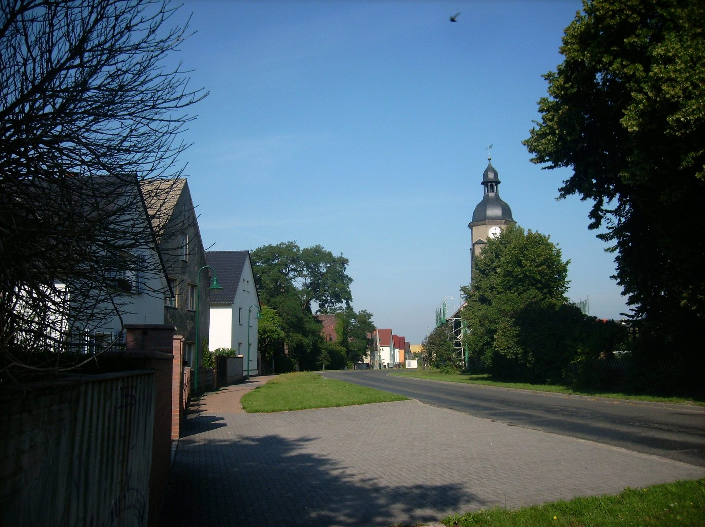
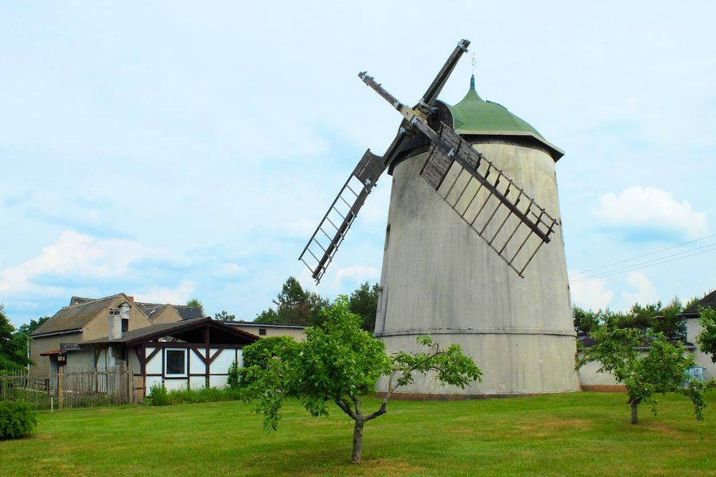
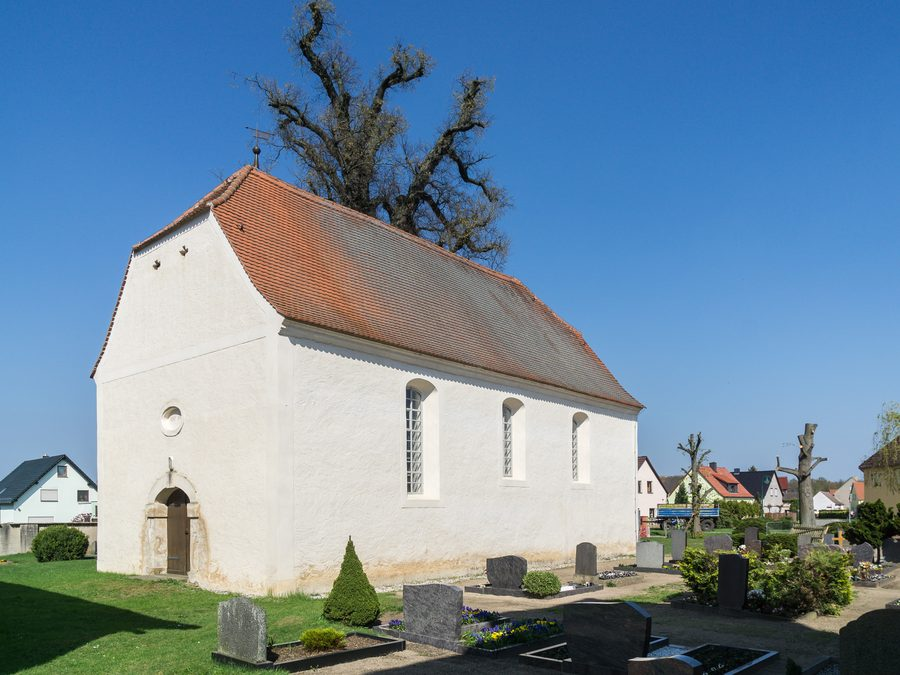
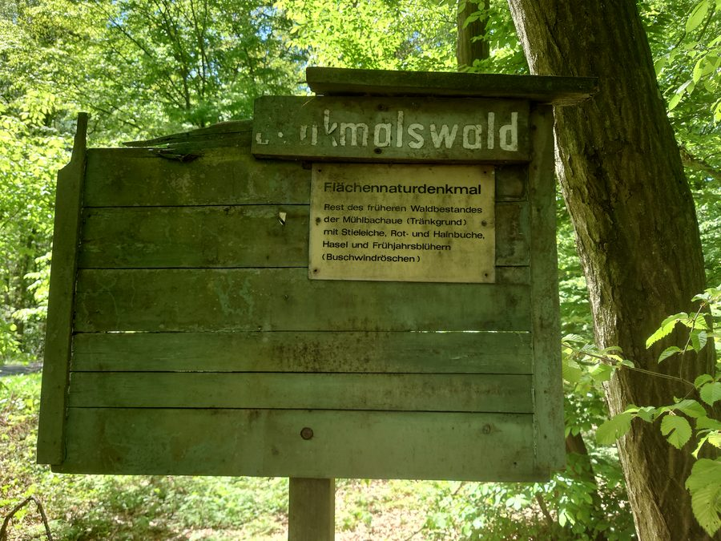

Seit dem 1. Januar 1996
Sechs Ortschaften, elf Orte
Battaune, Doberschütz, Mörtitz, Paschwitz, Sprotta und Wöllnau haben sich 1996 zu einer Gemeinde zusammengeschlossen. Jede Ortschaft hat weiterhin ihren eigenen Ortschaftsrat.
Die Namen sind älter als jede Verwaltungsgrenze: sie sind sorbischen Ursprungs. Battaune wird um das Jahr 1000 erstmals genannt, Doberschütz 1314. Bis 1815 gehörte der Ort zum kursächsischen Amt Eilenburg.

Ortsmitte Doberschütz. Am Anger führt die Straße auf den Kirchturm zu.
Die Gemeinde in Zahlen
- Einwohner
- 3.985Stand 31. Dezember 2025
- Fläche
- 77,79Quadratkilometer
- Ortsteile
- 11in sechs Ortschaften
- Höhe
- 105Meter über Normalhöhennull
Wo das liegt
Am Südrand der Dübener Heide
Die Gemeinde liegt rund zehn Kilometer östlich von Eilenburg an der Südseite der Dübener Heide, am Schwarzbach. Im Nordwesten, beim Ortsteil Mörtitz, grenzt sie an das Muldetal.
Im Westen, an der Grenze zu Eilenburg, liegt im Ortsteil Sprotta-Siedlung ein großer Kiessee. Er wird als Naherholungsgebiet genutzt.
Die Ortschaften
Ein Ort nach dem anderen
Battaune
Ortsteil: Battaune
Der älteste Ort der Gemeinde – er wird um das Jahr 1000 erstmals erwähnt. In der Dorfkirche stehen ein spätgotischer Schnitzaltar und wertvolle Wandmalereien; die Kirche ist in den letzten Jahren restauriert worden.
Doberschütz
Ortsteil: Doberschütz
1314 erstmals urkundlich erwähnt und heute Sitz der Verwaltung. Hier stehen das Rathaus in der Breiten Straße und die Grundschule – nach eigener Angabe die erste Naturparkschule des Naturpark Dübener Heide e. V. Der Haltepunkt an der Strecke Halle–Cottbus wird von der S4 bedient, die B 87 führt durch den Ort.
Mörtitz
Ortsteile: Mörtitz, Mensdorf, Rote Jahne
Mensdorf und Rote Jahne kamen 1936 zu Mörtitz; Rote Jahne ist seit dem 8. November 2002 wieder als eigener Ortsteil ausgewiesen. Im Ort steht der denkmalgeschützte Glockenturm in der Schulgasse. Kindertagesstätte „Sonnenkäfer“.
Paschwitz
Ortsteile: Paschwitz, Bunitz, Mölbitz
Bunitz gehört seit 1950 zu Paschwitz, Mölbitz seit 1973. Über dem Ort liegt der Witrowberg. Die Turmwindmühle Friedemann von 1883 hat bis 1998 gearbeitet. In Bunitz und Mölbitz stehen die beiden Wegesteine, die dieser Seite ihr Motiv geliehen haben. Gemeindebibliothek montags 16–17 Uhr.
Sprotta
Ortsteile: Sprotta, Sprotta-Siedlung
In Sprotta-Siedlung liegt der große Kiessee an der Grenze zu Eilenburg, dazu das Gut Heideck mit Villa und Turmstation. In Sprotta findet im August das Dorffest statt; die Kindertagesstätte heißt „Storchennest“.
Wöllnau
Ortsteile: Wöllnau, Winkelmühle
In Winkelmühle liegt der kleinste öffentliche Waldfriedhof Europas, daneben der Denkmalswald – ein Flächennaturdenkmal, Rest des früheren Waldbestandes der Mühlbachaue mit Stieleiche, Rot- und Hainbuche. Gemeindebibliothek mittwochs 16:30–17:30 Uhr.
Was man ansehen kann
Drei Orte, an denen es sich lohnt anzuhalten



Die Gegend ringsum
Wer sonst noch über diese Landschaft schreibt
Verweise, die auch die bisherige Gemeindeseite führt oder die für diese Landschaft zuständig sind.
Kein Wappen auf dieser Seite
Das Gemeindewappen ist ein Hoheitszeichen; seine Führung ist rechtlich geregelt. Ein unverbindlicher Entwurf verwendet es deshalb nicht. Das amtliche Wappen zeigt die Gemeinde selbst auf doberschuetz.eu.